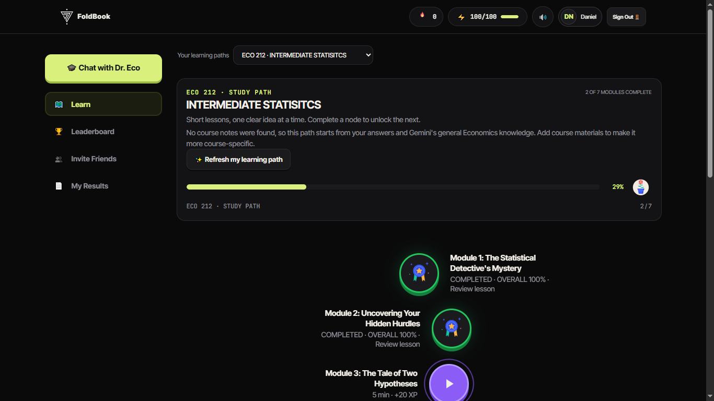
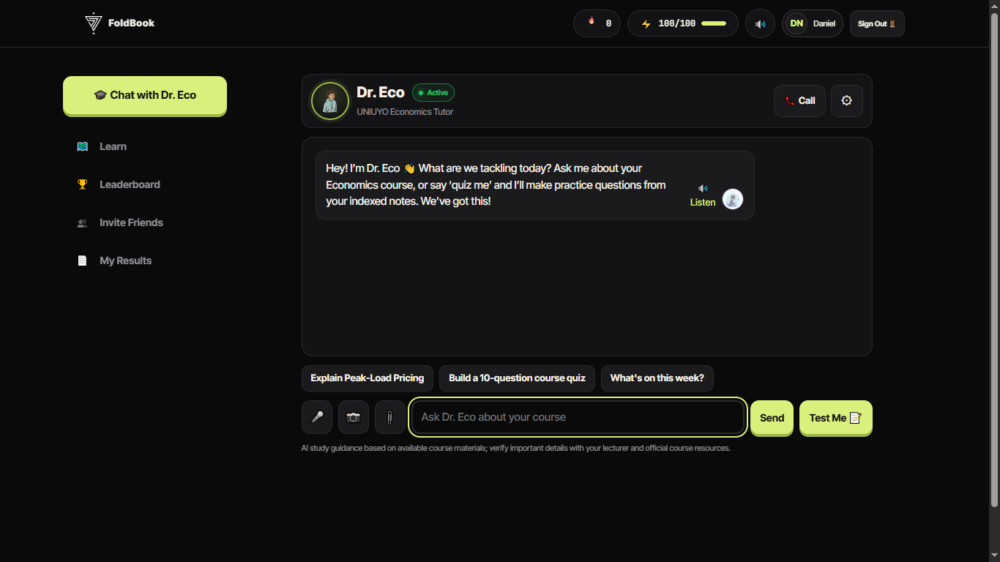
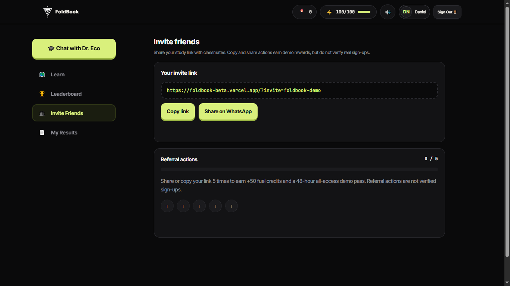

RESULTS
& RESOURCES
Centralized result access for Economics students, alongside course materials organized around their level and courses.
SEV7N FOLD / EDUCATION TECHNOLOGY
PRODUCT 04 — STUDENT ACADEMIC ECOSYSTEM
FoldBook brings academic access, course resources, AI assistance, and guided learning into one student-centred experience for Economics students at the University of Uyo.

FoldBook’s learning experience organizes study into focused modules, with progression and rewards designed to help students return, practise, and keep moving.
ONE CONNECTED ACADEMIC EXPERIENCE / 02
Centralized result access for Economics students, alongside course materials organized around their level and courses.
An academic assistant designed to help students explore Economics concepts through text and voice, with course materials as context when available.
Guided study paths and interactive learning designed around a student’s progress and learning pace.
Progress, streaks, and fuel credits add a sense of momentum to consistent academic practice.

ASK / EXPLORE / PRACTISE
Dr. Eco is designed around the student’s Economics learning context. Students can ask about a course, request a practice quiz, or explore a topic through a conversational interface.
Where course resources are available, they can help ground the experience in the material students are studying.
STUDY / PROGRESS / RETURN
Study paths, completed modules, streaks, and fuel credits make progress visible. The intent is to encourage steady practice throughout a semester—not only when results or exams are close.

FoldBook also explores student-to-student sharing and referral rewards as ways to help the learning community grow.
BUILT FOR A REAL ACADEMIC CONTEXT / 05
FoldBook is developed for Economics students at the University of Uyo through a strategic partnership between the Director of Information office and SEV7N FOLD.
The platform connects an institutional academic need with a student-facing product experience—bringing academic information and learning support into the same environment.
FOLDBOOK / SEV7N FOLD